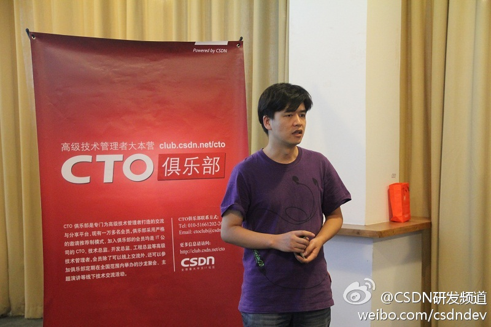
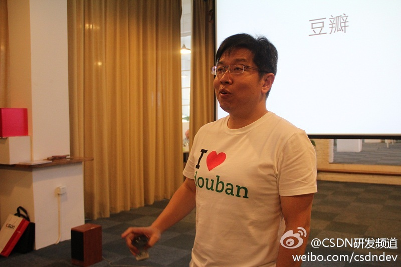
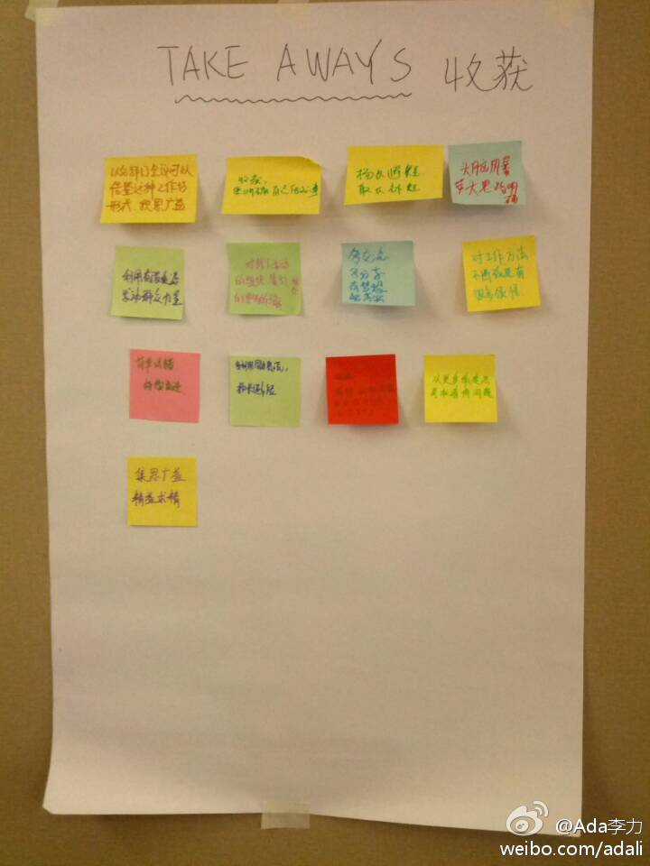

演讲稿下载：网页链接 CSDN报道： 网页链接 @hongqn @CTO俱乐部@CSDN研发频道:#CTO俱乐部#走进豆瓣：豆瓣的技术架构与团队文化分享活动正在进行中。豆瓣首席架构师洪强宁向大家介绍了豆瓣内部使用的技术和架构，以及豆瓣如何选择、配置这些技术。 
演讲稿下载： 网页链接 CSDN的报道 网页链接 @段念-段文韬 @CTO俱乐部@CSDN研发频道:#CTO俱乐部#走进豆瓣：豆瓣的技术架构与团队文化分享活动正在进行中。豆瓣工程副总裁段念正在向大家介绍豆瓣的技术团队文化，和大家一起探讨如何招聘、培养和保持团队的工程师文化。 
点评网什么时候来北京讲呢？//@香辣五花肉:这个有价值，@段念-段文韬 什么时候来上海讲啊，点评负责接待 //@Ada李力:演讲稿下载： 网页链接 CSDN的报道 网页链接 @段念-段文韬 @CTO俱乐部@CSDN研发频道:#CTO俱乐部#走进豆瓣：豆瓣的技术架构与团队文化分享活动正在进行中。豆瓣工程副总裁段念正在向大家介绍豆瓣的技术团队文化，和大家一起探讨如何招聘、培养和保持团队的工程师文化。
CSDN#社区运营#工作坊收获总结- 宁: 要扬长避短；蒋:开阔了思路；陈: 要发动群众力量；翟:了解线下活动；张:梦想需要实践落实；李: 对工作方法不断改进；齐: 试错，不断改进；郭: 多利用资源，不要闷头做事；高: 思维想法来指导实践；车: 集广益，精益求精；杨: 学会多角度看问题。 
姣姣做完作业，在她的屋子里稀稀梭梭地摆弄东西，我走进去打开大灯，见她在整理一个装着项链和装饰品的小盒子，我说：“妈妈挺喜欢看你玩的”。姣姣说：“我没有在玩啊”。- 我觉得什么都可以当作玩来看，就是不知姣姣是怎么定义“玩”的。